Galeria - Fiat
 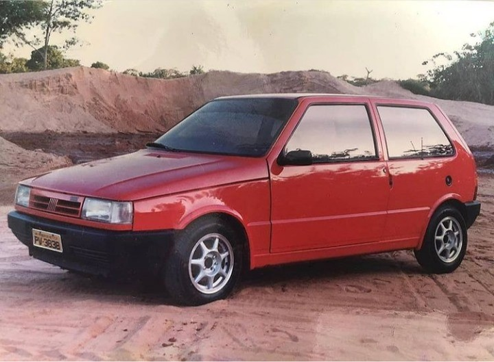
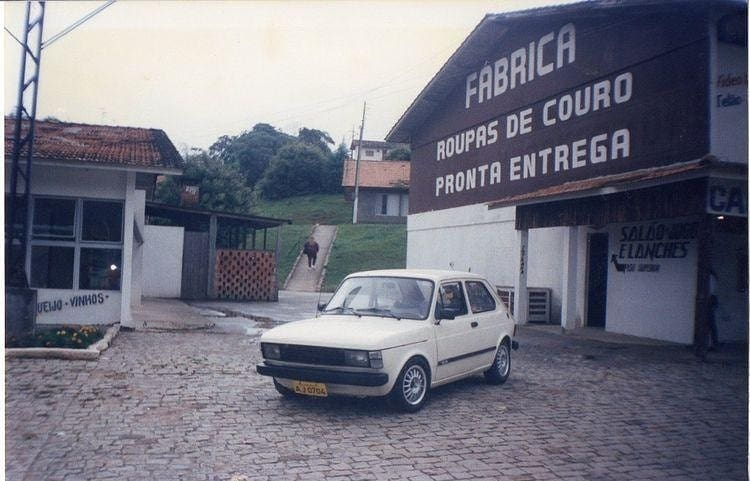
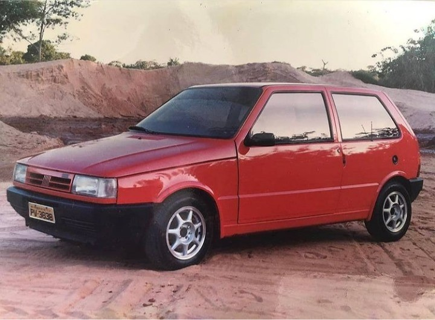
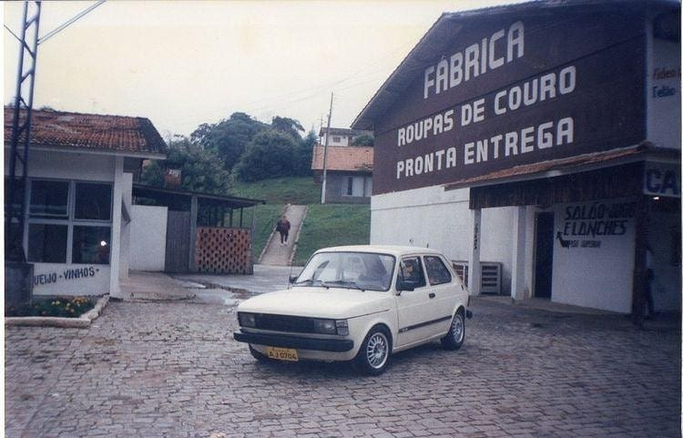
 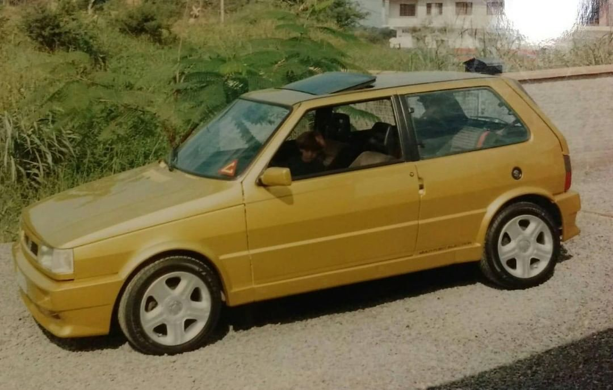
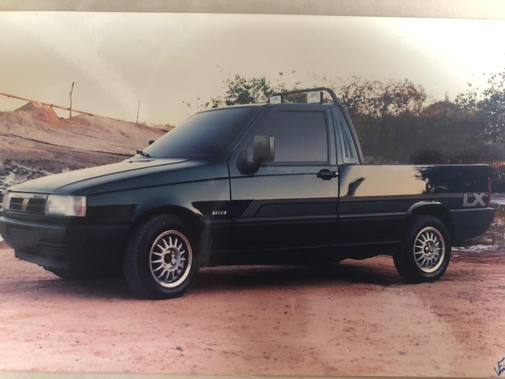
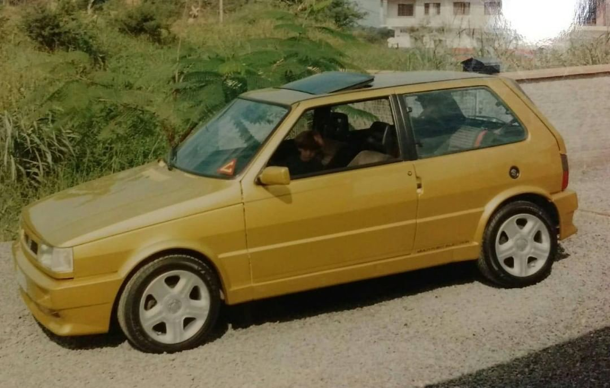
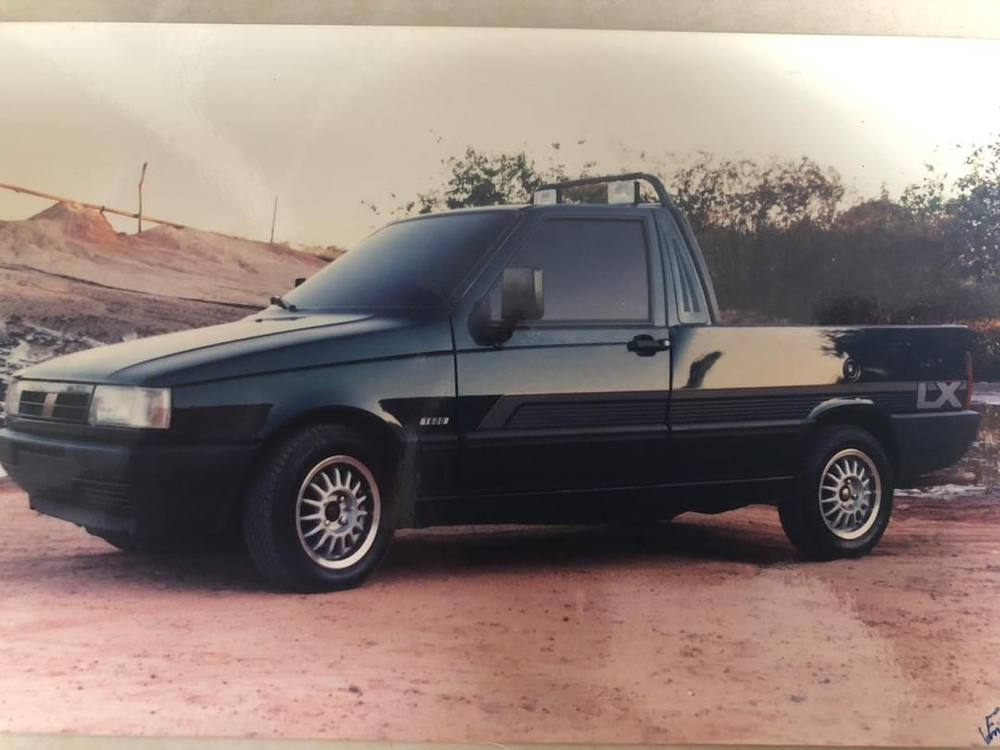
Aqui estão alguns exemplos de VEBs da época. Essas fotos foram retiradas na época em várias cidades brasileiras.
 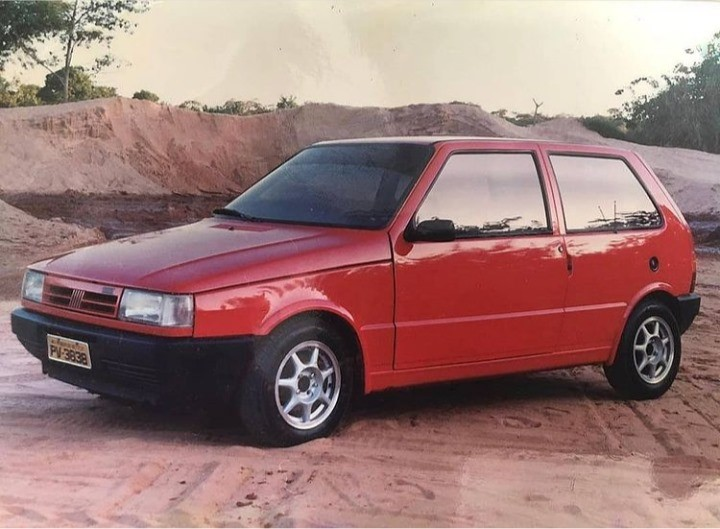
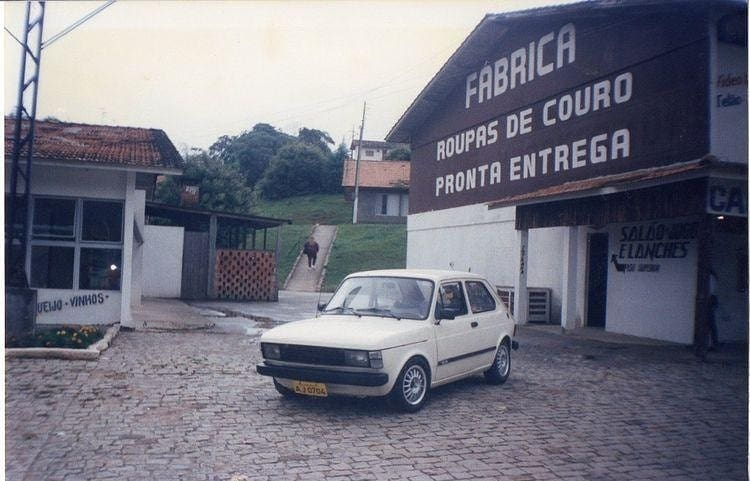
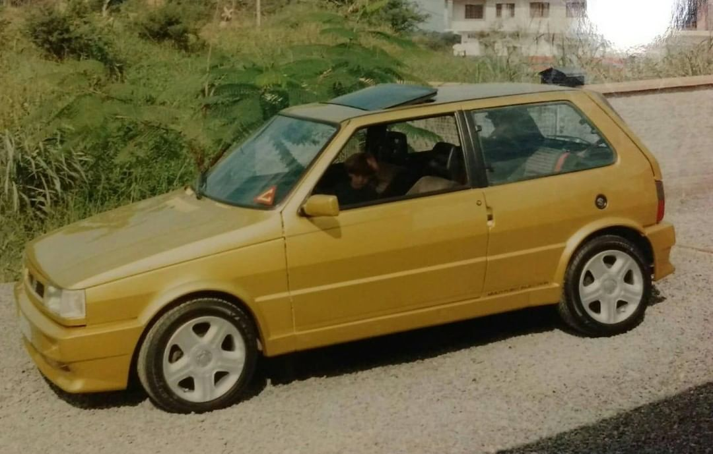
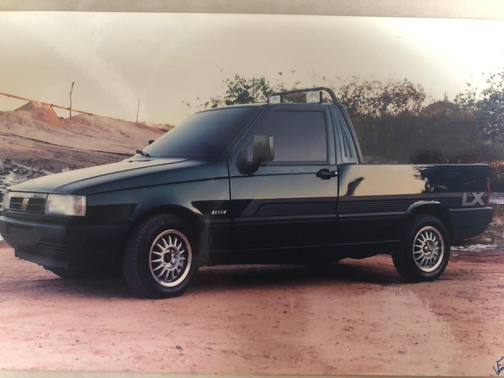
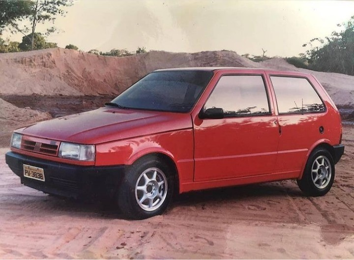
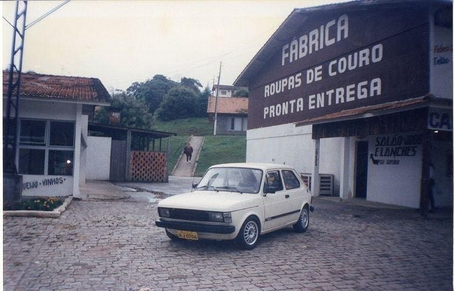
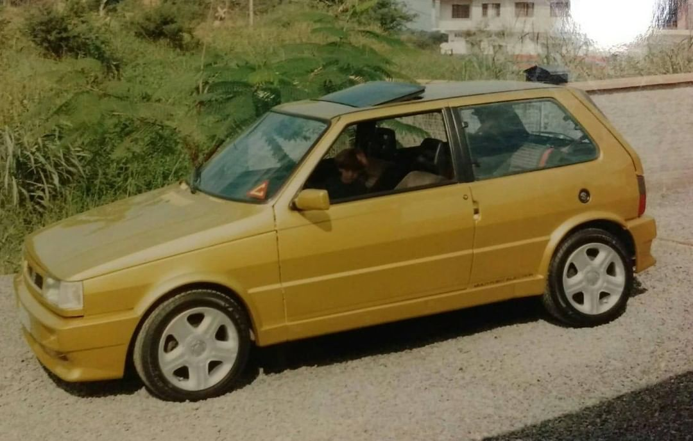
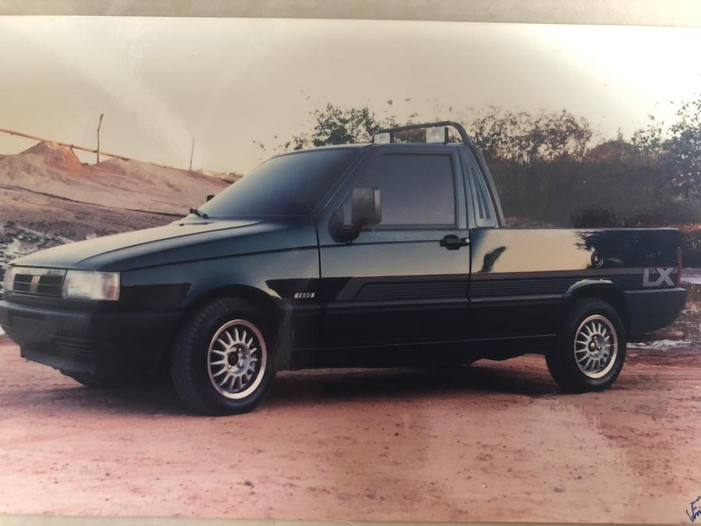
Aqui estão alguns exemplos de VEBs da época. Essas fotos foram retiradas na época em várias cidades brasileiras.